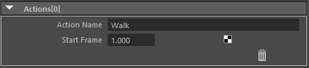

Action List¶
Contents of this page:
Overview¶
This attribute does not directly affect the view
Can be combined with Python or MEL scripts to customize the view
This attribute is often used when creating animation clips for games.
See also
See [Actions (using external Python files)] for specific usage
Attributes (Actions[*] in frame)¶

Action Name¶
Enter an action name
WalkJumpetc.
Start Frame¶
Enter the start frame of the action
“Trash” icon¶
Delete Action